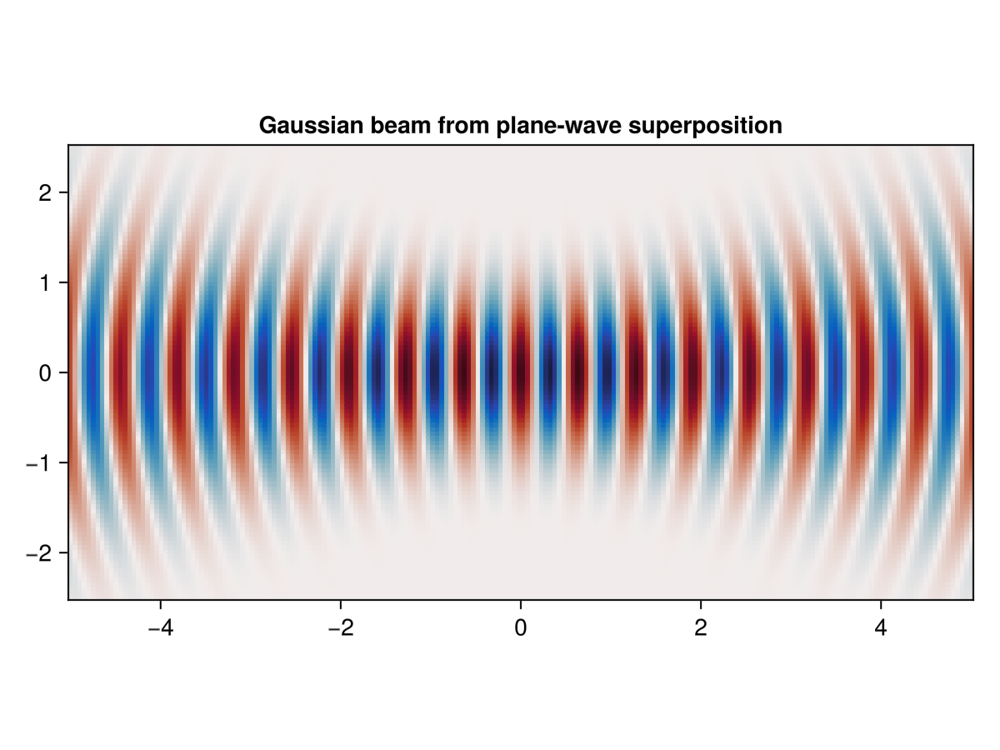
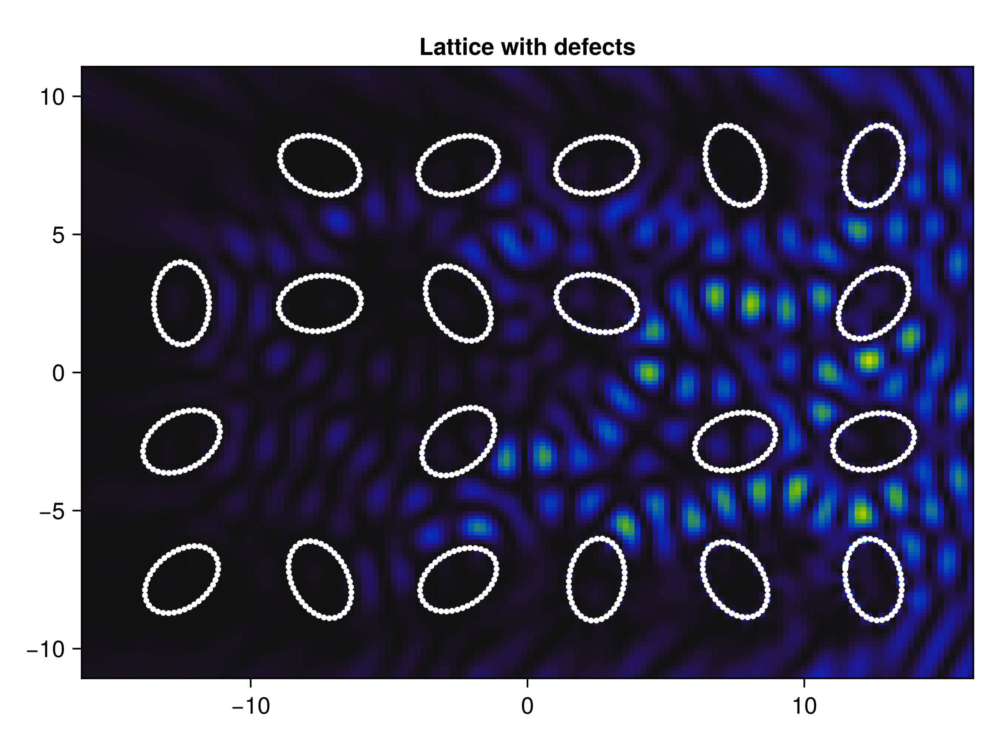

Essentially, a Boundary Integral Method (BIM) reduces the degrees of freedom of a problem to those of the boundary. It also means that the problem becomes meshless, which means that there is no need for simple domains.
However, the method relies on a more abstract notion of integral operators (rather than differential equations). Furthermore, most of the matrices are dense, which While numerical integration can be more stable than numerical differentiation, one may need to project the continuous integral onto a finite-dimensional space of functions, which can be tricky to account for corners (infinite information in Fourier spectrum).
“…on formulas differentiation is nice and integration is hard, but on computable functions differentiation is hard and integration is nice.”
Jacques Carette
In the method implemented below, a matrix is associated to the required kernel for the integral operator. The chosen kernel will dictate how well-behaved (or well-conditioned) the matrix will be, and thus which algorithms can be used to solve a system \(A\bm{x}=\bm{b}\).
A BIM is an example of a Galerkin method.
Continuous (real-angle) beam shaping seems less difficult once one realizes that, as long as the incident wave \(\phi\) is a solution of the Helmholtz equation, then any linear combination is admissible for the algorithm. For example, an integral of the form
\[\Psi_z(\mathbf{r})=\frac{1}{2\pi}\int\mathrm{d}\mathbf{k} \; A(\mathbf{k})\,\Phi(\mathbf{k},\mathbf{r})\]effectively molds plane waves into another beam, determined by its spectrum \(A(\mathbf{k})\). A simple beam to test is a Gaussian beam, since its spectrum is also a Gaussian.

One can also simulate metamaterials composed of individual rods. For example, by creating a lattice with ellipse-like boundaries, it can imitate a meta-optical surface, where by adjusting angles and certain parameters, one can have a non-linear response for different frequencies (i.e. multiplexing).

Briefly, one performs a quadrature for curve elements within the range \(|i-j|<\varepsilon< N\). Setting \(|i-j|=N-1\) yields a fully integrated method, while using \(|i-j|=0\) results in a fully discretized version. We have found that, for TM polarization, even setting as low as \(|i-j|=1\) takes similar time and allocations as with \(|i-j|=0\), but with increased acccuracy.
The EM problem is considerably more difficult to implement than it is to state. Although one only has two extra fields, \(E_x\) and \(E_y\), the system is now coupled, which means that the original \(N\times N\) matrix becmes a dense system of size \(3N\times 3N\). Furthermore, the system becomes considerably harder for the LAPACK library to solve the linear problem. Here, band integrated matrices become a must in order to prevent singularities showing up from the Green’s tensor, which is implemented using a \(M\)-dyadic generalization of the \(\mathbb{M}\) matrix described in Da Luz, et al. (1997),
\[\mathbf{M}_{ij}=\int_{\mathcal{C}_j}\mathrm{d}{s'}\;\mathbf{G}^B(\mathbf{r}_i,\mathbf{r}(s’)).\]
Using a compact notation, one obtains the \(T\)-dyadic which solves the numerical scattering problem,
\[\mathbf{T}\equiv\gamma\left[\mathbf{1}\hat{x}_\ell\hat{x}_\ell-\gamma M^{\ell m}\hat{x}_\ell\hat{x}_m\right]^{-1},\]
where \(\hat{x}_\ell\hat{x}_m\) represents a dyad.
The growth of the operator compared to the boundary resolution implies the need for either heriarchical matrices or preconditioning using wavelets. As far as my work goes, I think I might take a rest from this algorithm for a while.
See the BoundaryWall.jl description of the available code.